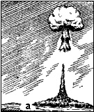
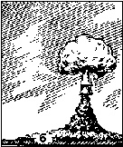
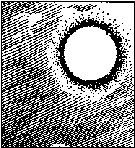
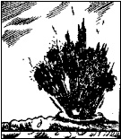
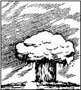
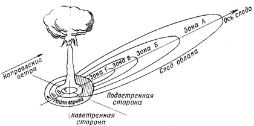

1. Боевые свойства и поражающие факторы ядерного оружия
Ядерный взрыв сопровождается выделением огромного количества энергии и способен практически мгновенно вывести из строя на значительном расстоянии незащищенных людей, открыто расположенную технику, сооружения и различные материальные средства. Основными, поражающими факторами ядерного взрыва являются: ударная волна (сейсмовзрывные волны), световое излучение, проникающая радиация электромагнитный импульс, и радиоактивное заражение местности.
2. Виды ядерных взрывов и их отличие по внешним признакам
Ядерные взрывы могут осуществляться в воздухе на различной высоте, у поверхности земли (воды) и под землей (водой). В соответствии с этим ядерные взрывы разделяют на воздушные, высотные, наземные (надводные) и подземные (подводные).
Воздушный ядерный взрыв. К воздушным ядерным взрывам относятся взрывы в воздухе на такой высоте, когда светящаяся область взрыва не касается поверхности земли (воды) (рис. а).
Одним из признаков воздушного взрыва является то, что пылевой столб не соединяется с облаком взрыва (высокий воздушный взрыв). Воздушный взрыв может быть высоким и низким.
Точка на поверхности земли (воды), над которой произошел взрыв, называется эпицентром взрыва.
Воздушный ядерный взрыв начинается ослепительной кратковременной вспышкой, свет от которой может наблюдаться на расстоянии нескольких десятков и сотен километров.
Вслед за вспышкой в месте взрыва возникает шарообразная светящаяся область, которая быстро увеличивается в размерах и поднимается вверх. Температура светящейся области достигает десятков миллионов градусов. Светящаяся область служит мощным источником светового излучения. Увеличиваясь, огненный шар быстро поднимается вверх и охлаждается, превращаясь в поднимающееся клубящееся облако. При подъеме огненного шара, а затем клубящегося облака создается мощный восходящий поток воздуха, который засасывает с земли поднятую взрывом пыль, которая удерживаются в воздухе в течение нескольких десятков минут.
При низком воздушном взрыве (рис. б) столб пыли, поднятый взрывом, может соединиться с облаком взрыва; в результате образуется облако грибовидной формы.
Если воздушный взрыв произошел на большой высоте, то столб пыли может и не соединиться с облаком. Облако ядерного взрыва, двигаясь по ветру, утрачивает свою характерную форму и рассеивается.
Ядерный взрыв сопровождается резким звуком, напоминающим сильный раскат грома. Воздушные взрывы могут применяться противником для поражения войск на поле боя, разрушения городских и промышленных зданий, поражения самолетов и аэродромных сооружений.
Поражающими факторами воздушного ядерного взрыва являются: ударная волна, световое излучение, проникающая радиация и электромагнитный импульс.
Высотный ядерный взрыв. Высотный ядерный взрыв производится на высоте от 10 км и более от поверхности земли. При высотных взрывах на высоте нескольких десятков километров в месте взрыва образуется шарообразная светящаяся область, размеры ее больше, чем при взрыве такой же мощности в приземном слое атмосферы. После остывания светящаяся область превращается в клубящееся кольцевое облако. Пылевой столб и облако пыли при высотном взрыве не образуются.
При ядерных взрывах на высотах до 25-30 км поражающими факторами этого взрыва являются ударная волна, световое излучение, проникающая радиация и электромагнитный импульс.
С увеличением высоты взрыва вследствие разрежения атмосферы ударная волна значительно ослабевает, а роль светового излучения и проникающей радиации возрастает. Взрывы, происходящие в ионосферной области, создают в атмосфере районы или области повышенной ионизации, которые могут влиять на распространение радиоволн (ультракоротковолнового диапазона) и нарушать работу радиотехнических средств.
Радиоактивное заражение поверхности земли при высотных ядерных взрывах практически отсутствует.
Высотные взрывы могут применяться для уничтожения воздушных и космических средств нападения и разведки: самолетов, крылатых ракет, спутников, головных частей баллистических ракет.
Наземный ядерный взрыв. Наземным ядерным взрывом называется взрыв на поверхности земли или в воздухе на небольшой высоте, при котором светящаяся область касается земли.
При наземном взрыве светящаяся область имеет форму полусферы, лежащей основанием на поверхности земли. Если наземный взрыв осуществляется на поверхности земли (контактный взрыв) или в непосредственной близости от нее, в грунте образуется большая воронка, окруженная валом земли.
Размер и форма воронки зависят от мощности взрыва; диаметр воронки может достигать несколько сотен метров.
При наземном взрыве образуется мощное пылевое облако и столб пыли, чем при воздушном, причем столб пыли с момента его образования соединен с облаком взрыва, в результате чего в облако вовлекается огромное количество грунта, который придает ему темную окраску. Перемешиваясь с радиоактивными продуктами, грунт способствует их интенсивному выпадению из облака. При наземном взрыве радиоактивное заражение местности в районе взрыва и по следу движения облака значительно сильнее, чем при воздушном. Наземные взрывы предназначаются для разрушения объектов, состоящих из сооружений большой прочности, и поражения войск, находящихся в прочных укрытиях, если при этом допустимо или желательно сильное радиоактивное заражение местности и объектов в районе взрыва или на следе облака.
Эти взрывы применяются и для поражения открыто расположенных войск, если необходимо создать сильное радиоактивное заражение местности. При наземном ядерном взрыве поражающими факторами являются ударная волна, световое излучение, проникающая радиация радиоактивное заражение местности и электромагнитный импульс.
Подземный ядерный взрыв. Подземным ядерным взрывом называется взрыв, произведенный на некоторой глубине в земле.
При таком взрыве светящаяся область может не наблюдаться; при взрыве создается огромное давление на грунт, образующаяся ударная волна вызывает колебания почвы, напоминающие землетрясение. В месте взрыва образуется большая воронка, размеры которой зависят от мощности заряда, глубины взрыва и типа грунта; из воронки выбрасывается огромное количество грунта, перемешанного с радиоактивными веществами, которые образуют столб. Высота столба может достигать многих сотен метров.
При подземном взрыве характерного, грибовидного облака, как правило, не образуется. Образующийся столб имеет значительно более темную окраску, чем облако наземного взрыва. Достигнув максимальной высоты, столб начинает разрушаться. Радиоактивная пыль, оседая на землю, сильно заражает местность в районе взрыва и по пути движения облака.
Подземные взрывы могут осуществляться для разрушения особо важных подземных сооружений и образования завалов в горах в условиях, когда допустимо сильное радиоактивное заражение местности и объектов. При подземном ядерном взрыве поражающими факторами являются сейсмовзрывные волны и радиоактивное заражение местности.
Надводный ядерный взрыв. Этот взрыв имеет внешнее сходство с наземным ядерным взрывом и сопровождается теми же поражающими факторами, что и наземный взрыв. Разница заключается в том, что грибовидное облако надводного взрыва состоит из плотного радиоактивного тумана или водяной пыли.
Характерным для этого вида взрыва является образование поверхностных волн. Действие светового излучения значительно ослабляется вследствие экранирования большой массой водяного пара. Выход из строя объектов определяется в основном действием воздушной ударной волны.
Радиоактивное заражение акватории, местности и объектов происходит вследствие выпадения радиоактивных частиц из облака взрыва. Надводные ядерные взрывы могут осуществляться для поражения крупных надводных кораблей и прочных сооружений военно-морских баз, портов, когда допустимо или желательно сильное радиоактивное заражение воды и прибрежной местности.
Подводный ядерный взрыв. Подводным ядерным взрывом называется взрыв, осуществленный в воде на той или иной глубине.
При таком взрыве вспышка и светящаяся область, как правило, не видны.
При подводном взрыве на небольшой глубине над поверхностью воды поднимается полый столб воды, достигающий высоты более километра. В верхней части столба образуется облако, состоящее из брызг и паров воды. Это облако может достигать несколько километров в диаметре.
Через несколько секунд после взрыва водяной столб начинает разрушаться и у его основания образуется облако, называемое базисной волной. Базисная волна состоит из радиоактивного тумана; она быстро распространяется во все стороны от эпицентра взрыва, одновременно поднимается вверх и относится ветром.
Спустя несколько, минут базисная волна смешивается с облаком султана (султан - клубящееся облако, окутывающее верхнею часть водяного столба) и превращается в слоисто-кучевое облако, из которого выпадает радиоактивный дождь. В воде образуется ударная волна, а на ее поверхности - поверхностные волны, распространяющиеся во все стороны. Высота волн может достигать десятков метров.
Подводные ядерные взрывы предназначены для уничтожения кораблей и разрушений подводной части сооружений. Кроме того, они могут осуществляться для сильного радиоактивного заражения кораблей и береговой полосы.
3. Краткая характеристика поражающих факторов ядерного взрыва и их воздействие на организм человека, боевую технику и вооружение
Основными, поражающими факторами ядерного взрыва являются: ударная волна (сейсмовзрывные волны), световое излучение, проникающая радиация электромагнитный импульс, и радиоактивное заражение местности.
Ударная волна
Ударная волна является основным поражающим фактором ядерного взрыва. Она представляет собой область сильного сжатия среды (воздуха, воды), распространяющуюся во все стороны от точки взрыва со сверхзвуковой скоростью. В самом начале взрыва передней границей ударной волны является поверхность огненного шара. Затем, по мере удаления от центра взрыва, передняя граница (фронт) ударной волны отрывается от огненного шара, перестает светиться и становится невидимой.
Основными параметрами ударной волны являются избыточное давление во фронте ударной волны, время ее действия и скоростной напор. При подходе ударной волны к какой-либо точке пространства в ней мгновенно повышается давление и температура, а воздух начинает двигаться в направлении распространения ударной волны. С удалением от центра взрыва давление во фронте ударной волны падает. Затем становится меньше атмосферного (возникает разрежение). В это время воздух начинает двигаться в направлении, противоположном направлению распространения ударной волны. После установления атмосферного давления движение воздуха прекращается.
Ударная волна проходит первые 1000 м за 2 сек, 2000 м - за 5 сек, 3000 м - за 8 сек.
За это время человек, увидев вспышку, может укрыться и тем самым уменьшить вероятность поражения волной или вообще избежать его.
Ударная волна может наносить поражения людям, разрушать или повреждать технику, вооружение, инженерные сооружения и имущество. Поражения, разрушения и повреждения вызываются как непосредственным воздействием ударной, волны, так и косвенно - обломками разрушаемых зданий, сооружений, деревьев и т.п.
Степень поражения людей и различных объектов зависит от того, на каком расстоянии от места взрыва и в каком положении они находятся. Объекты, расположенные на поверхности земли, повреждаются сильнее, чем заглубленные.
Световое излучение
Световое излучение ядерного взрыва представляет собой поток лучистой энергии, источником которой является светящаяся область, состоящая из раскаленных продуктов взрыва и раскаленного воздуха. Размеры светящейся области пропорциональны мощности взрыва. Световое излучение распространяется практически мгновенно (со скоростью 300000 км/сек) и длится в зависимости от мощности взрыва от одной до нескольких секунд. Интенсивность светового излучения и его поражающее действие уменьшаются с увеличением расстояния от центра взрыва; при увеличении расстояния в 2 и 3 раза интенсивность светового излучения снижается в 4 и 9 раз.
Действие светового излучения при ядерном взрыве заключается в нанесении поражений людям и животным ультрафиолетовыми, видимыми и инфракрасными (тепловыми) лучами в виде ожогов различной степени, а также в обугливании или возгорании воспламеняющихся частей и деталей сооружений, зданий, вооружения, боевой техники, резиновых катков танков и автомобилей, чехлов, брезентов и других видов имущества и материалов. При прямом наблюдении взрыва с близкого расстояния световое излучение причиняет повреждения сетчатке глаз и может вызвать потерю зрения (полностью или частично).
Проникающая радиация
Проникающая радиация представляет собой поток гамма лучей и нейтронов, испускаемых в окружающую среду из зоны и облака ядерного взрыва. Продолжительность действия проникающей радиации, составляете всего несколько секунд, тем не менее, она способна наносить тяжелое поражение личному составу в виде лучевой болезни, особенно если он расположен открыто. Основным источником гамма-излучения являются осколки деления вещества заряда, находящиеся в зоне взрыва и радиоактивном облаке. Гамма-лучи и нейтроны способны проникать через значительные толщи различных материалов. При прохождении через различные материалы поток гамма-лучей ослабляется, причем, чем плотнее вещество, тем больше ослабление гамма-лучей. Например, в воздухе гамма-лучи распространяются на многие сотни метров, а в свинце всего лишь на несколько сантиметров. Нейтронный поток наиболее сильно ослабляется веществами, в состав которых входят легкие элементы (водород, углерод). Способность материалов ослаблять гамма-излучение и поток нейтронов можно характер
изовать величиной слоя половинного ослабления.
Слоем половинного ослабления называется толщина материала, проходя через, которую гамма-лучи и нейтроны ослабляются в 2 раза. При увеличении толщины материала до двух слоев половинного ослабления доза радиации уменьшается в 4 раза, до трех слоев - в 8 раз и т. д.
ЗНАЧЕНИЕ СЛОЯ ПОЛОВИННОГО ОСЛАБЛЕНИЯ ДЛЯ НЕКОТОРЫХ МАТЕРИАЛОВ
|
Материал |
Плотность, г/см3 |
Слой половинного ослабления, см |
|
|
по нейтронам |
по гамма-излучению |
||
|
Вода |
1 |
3 |
20 |
|
Полиэтилен |
0,9 |
3 |
22 |
|
Сталь |
7,8 |
11 |
3 |
|
Свинец |
11,3 |
12 |
2 |
|
Грунт |
1,6 |
9 |
13 |
|
Бетон |
2,3 |
8 |
10 |
|
Дерево |
0,7 |
10 |
30 |
Коэффициент ослабления проникающей радиации при наземном взрыве мощностью 10 тыс. т. для закрытого бронетранспортера равен 1,1. Для танка - 6, для траншеи полного профиля – 5. Подбрустверные ниши и перекрытые щели ослабляют радиацию в 25-50 раз; покрытие блиндажа ослабляет радиацию в 200-400 раз, а покрытие убежища - в 2000-3000 раз. Стена железобетонного сооружения толщиной в 1 м ослабляет радиацию примерно в 1000 раз; броня танков ослабляет радиацию в 5-8 раз.
Радиоактивное заражение местности
Радиоактивное заражение местности, атмосферы и различных объектов при ядерных взрывах вызывается осколками деления, наведенной активностью и не прореагировавшей частью заряда.
Основным источником радиоактивного заражения при ядерных взрывах являются радиоактивные продукты ядерной реакции - осколки деления ядер урана или плутония. Радиоактивные продукты ядерного взрыва, осевшие на поверхность земли, испускают гамма-лучи, бета- и альфа-частицы (радиоактивные излучения).
Радиоактивные частицы выпадают из облака и заражают местность, создавая радиоактивный след на расстояниях в десятки и сотни километров от центра взрыва. По степени опасности зараженную местность по следу облака ядерного взрыва делят на четыре зоны.
Зона А – умеренного заражения. Доза излучения до полного распада радиоактивных веществ на внешней границе зоны составляет 40 рад, на внутренней границе – 400 рад. Зона Б – сильного заражения – 400-1200 рад. Зона В – опасного заражения – 1200-4000 рад. Зона Г – чрезвычайно опасного заражения – 4000-7000 рад.
На зараженной местности люди подвергаются действию радиоактивных излучений, в результате чего у них может развиться лучевая болезнь. Не менее опасно попадание радиоактивных веществ внутрь организма, а также на кожу. Так, при попадании на кожу, особенно на слизистые оболочки полости рта, носа и глаз, даже малых количеств радиоактивных веществ могут наблюдаться радиоактивные поражения.
Вооружение и техника, зараженные РВ, представляют определенную опасность для личного состава, если обращаться, с ними без средств защиты. В целях исключения поражения личного состава от радиоактивности зараженной техники установлены допустимые уровни заражения продуктами ядерных взрывов, не приводящие к лучевому поражению. Если заражение выше допустимых норм, то необходимо удалять радиоактивную пыль с поверхностей, т. е. производить их дезактивацию.
Радиоактивное заражение, в отличие от других поражающих факторов, действует длительное время (часы, сутки, годы) и на больших площадях. Оно не имеет внешних признаков и обнаруживается только с помощью специальных дозиметрических приборов.
Электромагнитный импульс
Электромагнитные поля, сопровождающие ядерные взрывы, называют электромагнитным импульсом (ЭМИ).
При наземном и низком воздушном взрывах поражающее воздействие ЭМИ наблюдается на расстоянии нескольких километров от центра взрыва. При высотном ядерном взрыве могут возникнуть поля ЭМИ в зоне взрыва и на высотах 20-40 км от поверхности земли.
Поражающее действие ЭМИ проявляется, прежде всего, по отношению к радиоэлектронной и электротехнической аппаратуре, находящейся на вооружении и военной технике и других объектах. Под действием ЭМИ в указанной аппаратуре наводятся электрические токи и напряжения, которые могут вызвать пробой изоляции, повреждение трансформаторов, порчу полупроводниковых приборов, перегорание плавких вставок и других элементов радиотехнических устройств.
Сейсмовзрывные волны в грунте
При воздушных и наземных ядерных взрывах в грунте образуются сейсмовзрывные волны, представляющие собой механические колебания грунта. Эти волны распространяются на большие расстояния от эпицентра взрыва, вызывают деформации грунта и являются существенным поражающим фактором для подземных, шахтных и котлованных сооружений.
Источником сейсмовзрывных волн при воздушном взрыве является воздушная ударная волна, действующая на поверхность земли. При наземном взрыве сейсмовзрывные волны образуются как в результате действия воздушной ударной волны, так и вследствие передачи энергии грунту непосредственно в центре взрыва.
Сейсмовзрывные волны формируют динамические нагрузки на конструкции, элементы строений и т. д. Сооружения и их конструкции совершают колебательные движения. Напряжения, возникающие в них, при достижении определенных значений приводить к разрушениям элементов конструкций. Колебания, передаваемые от строительных конструкций на размещаемые в сооружениях вооружение, военную технику и внутреннее оборудование, могут приводить к их повреждениям. Пораженным может оказаться и личный состав в результате действия на него перегрузок и акустических волн, вызываемых колебательным движением элементов сооружений.
Вооружение и военная техника в определенной степени обеспечивает защиту от поражающих факторов ядерного взрыва, отравляющих веществ и биологических средств.
КРАТНОСТЬ ОСЛАБЛЕНИЯ ИОНИЗИРУЮЩИХ ИЗЛУЧЕНИЙ ВООРУЖЕНИЕМ И ВОЕННОЙ ТЕХНИКОЙ, НЕ ИМЕЮЩЕЙ ПРОТИВОРАДИАЦИОННЫХ ЭКРАНОВ
|
Вооружение и |
Защита от: |
|||
|
проникающей радиации. |
радиоактивного излучения |
|||
|
нейтронного излучения. |
g - излучения. |
Суммарного |
местности |
|
|
Танк средний |
3,3 |
10,0 |
4,0 |
10,0 |
|
Танк легкий |
3,3 |
5,0 |
3,0 |
5,0 |
|
Бронетранспортер |
1,5 |
1,5 |
1,5 |
4,4 |
|
БМП |
1,5 |
1,5 |
1,5 |
4,0 |
|
Автомобиль |
1,0 |
1,0 |
1,0 |
1,5-2,0 |
Автомобили и артиллерийские тягачи могут обеспечить защиту от избыточного давления ударной волны, вызывающего у незащищенного личного состава поражение легкой степени. При нахождении личного состава в кабинах или в кузовах автомобилей степень его поражения будет меньшей, чем на открытой местности. Кабины всех машин, кузова автобусного типа и кузова, оборудованные тентами, в некоторой степени защищают личный состав от заражения радиоактивными, капельно-жидкими отравляющими веществами, биологическими средствами. Концентрация аэрозолей (паров) радиоактивных, отравляющих веществ и бактериальных (биологических) средств в течение 1-2 мин с момента применения будет в них примерно в 2 раза меньшей, чем в окружающем воздухе. В кабинах и кузовах автомобилей дозы облучения личного состава на зараженной местности будут в 2 раза меньшими, чем при открытом расположении.
Бронетранспортеры и боевые машины пехоты обеспечивают: защиту от ударной волны на таком удалении от центра (эпицентра) взрыва, на которых личный состав при открытом расположении мог бы получить поражения средней тяжести; защиту от поражения световым излучением; от заражения радиоактивными, отравляющими веществами и биологическими средствами. Облучение личного состава в БТР и БМП на местности, зараженной радиоактивными веществами, будет в 2 раза меньшим, чем в автомобилях.
Танк защищает экипаж от ударной волны на таком удалении от центра (эпицентра) взрыва, где избыточное давление значительно превышает опасное для организма, защищает также от воздействия светового излучения и от заражения радиоактивными, отравляющими веществами и биологическими средствами, его броня значительно уменьшает дозу проникающей радиации и радиоактивного излучения зараженной местности.
Защитные свойства полевых фортификационных сооружений от поражающих факторов ядерного, химического и биологического оружия. Использование защитных свойств фортификационных сооружений от поражающих факторов оружия массового поражения
Защитой от ТХ, кроме средств индивидуальной защиты, служат убежища, подбрустверные блиндажи, перекрытые щели и ходы сообщения. Защитные свойства фортификационных сооружений от ядерного оружия приведены в таблице.
ЗАЩИТНЫЕ СВОЙСТВА ФОРТИФИКАЦИОННЫХ СООРУЖЕНИЙ ОТ ЯДЕРНОГО ОРУЖИЯ
|
Вид укрытия |
Коэффициент ослабления Ку: |
||
|
ударной волны |
светового |
проникающей |
|
|
Одиночный окоп для стрельбы стоя |
1,5 |
2,0 |
2,5 |
|
Одиночный окоп для стрельбы лежа |
1,2 |
1,5 |
1,7 |
|
Щель на отделение |
1,5 |
2,0 |
5,0 |
|
Щель перекрытая |
2,5 |
Исключает поражение |
30,0-40,0 |
|
Блиндаж |
5,0-6,0 |
То же |
400 |
|
Убежище легкого типа |
7,0-8,0 |
Тоже |
2000 |
Ниши перекрываются на уровне земли деревоземляным покрытием или земленосными мешками с грунтом, образующим сводчатое перекрытие под земляной обсыпкой толщиной грунта 60-100 см. Парный окоп с подбрустверными блиндажами из волнистой стали размерами в плане 180х75 см и высотой 120 см, защищенный грунтовым слоем, над блиндажом, толщиной 45...100 см., обеспечивает защиту от некоторых ТХ. Перекрытые участки траншей и перекрытые щели дают возможность личному составу укрыться от капельно-жидких ТХ.
Рельеф местности и растительный покров ограничивают действие поражающих факторов ядерного взрыва, оказывают влияние на глубину распространения и степень заражения местности радиоактивными, отравляющими веществами и бактериальными (биологическими) средствами.
При расположении войск на холмистой местности необходимо учитывать, что увеличение крутизны ската на 10° повышает (понижает) на 10 % давление во фронте ударной волны на переднем (обратном) скате возвышенности, а это соответственно ведет к увеличению (уменьшению) радиуса зоны поражения в 1,2-1,5 раза. Область уменьшения давления на обратных скатах распространяется на расстояние, которое примерно в 2-3 раза больше относительного превышения возвышенности над окружающей местностью.
Защитные свойства местности от поражающих факторов ядерного, химического и биологического оружия. Использование защитных свойств местности от поражающих факторов оружия массового поражения
При использовании защитных свойств местности можно ослабить воздействие поражающих факторов ядерного взрыва и химического оружия на личный состав, вооружение, военную технику и материальные средства.
Существенное влияние на эффективность применения химического оружия оказывают метеорологические условия и рельеф местности. Сильный ветер более 6 м/с и восходящие потоки воздуха, которые наблюдаются при конвекции, уменьшают возможность создания боевых концентраций зарина и бинарного зарина на цели и эффективность действия VХ, бинарного VХ и иприта. Летом первичное и вторичное облако зараженного воздуха при отсутствии восходящих потоков, лесных массивов и при ветре до 4 м/с, может распространяться на глубину до нескольких десятков километров. Зимой концентрация паров ТХ на участках заражения и глубина распространения вторичного облака зараженного воздуха значительно меньше, чем летом, а продолжительность действия на местности (стойкость) значительно увеличивается.
В отдельных районах характер рельефа, воздействуя на тепловой обмен между подстилающей поверхностью и атмосферой, может способствовать образованию инверсии. Так, в глубоких долинах, окруженных горами, в зимнее время наблюдается постоянная инверсия. Такое же влияние наблюдается по руслам рек, один из берегов которой сильно всхолмлен. В инверсионных слоях может застаиваться зараженный воздух и распространяться на большие расстояния по лощинам и бассейнам рек.
Глубина распространения зарина при конвекции будет примерно в 6 раз меньше, а при инверсии в 2,5 раза больше, чем при изотермии. Глубина распространения зараженного воздуха зимой в 3 раза меньше соответствующей величины летом.
В лесной местности, в глубоких лощинах, оврагах, карьерах, а также в кварталах многоэтажной застройки населенных пунктов возможен застой зараженного воздуха. Так, например, стойкость ТХ в лесу в 10 раз больше, чем на открытой местности. Глубина распространения первичного и вторичного облака зараженного воздуха в лесных массивах уменьшается в 2,5 раза.
Восходящие потоки воздуха в горах затрудняют создание поражающих концентраций ТХ и снижают их стойкость на местности, особенно в дневное время.
Стойкость ТХ в пустыне резко снижается , в тоже время повышается опасность поражения личного состава парами ТХ. Глубина распространения паров ТХ в следствие конвекции значительно уменьшается.
От поражающего действия светового излучения надежно защищают простейшие укрытия, элементы рельефа и местные предметы, если они создают зону тени, предохраняющую личный состав, вооружение и военную технику от прямого воздействия светового импульса. Чем больше расстояние от места взрыва, тем при меньшей крутизне скатов обеспечивается более надежная защита от прямого потока светового излучения. На расстоянии 1 км от центра (эпицентра) взрыва защита от светового излучения обеспечивается за обратными скатами с крутизной около 25°, а на удалении 2 км с крутизной около 12°. Однако складки местности не могут обеспечить полной защиты при наличии рассеянного светового излучения, особенно в пасмурную погоду и в зимнее время, когда часть энергии светового излучения может поступать и в зону тени.
От проникающей радиации хорошо защищают высокие холмы с крутыми скатами и глубокие складки местности. Защитные свойства возвышенностей начинают проявляться: при ядерных взрывах малой мощности - на расстоянии 1000 м и при крутизне ската 15°; средней мощности - на расстоянии 1300 м и при крутизне ската 20°; большой мощности - на расстоянии 1800 м и при крутизне ската 25°.
Радиоактивное заражение местности в результате выпадения продуктов ядерного взрыва во многом зависит от структуры грунта: чем рыхлее и суше грунт, тем сильнее заражение местности. Сухие пылеватые, лессовые и другие мелкозернистые грунты способствуют увеличению размеров и насыщенности радиоактивной пылью облака, образуемого ядерным взрывом. Подвергаясь воздействию проникающей радиации, особенно нейтронному излучению, грунты в зависимости от химического состава сами становятся радиоактивными. Такая наведенная радиоактивность в наибольшей степени характерна для солончаковых, глинистых и суглинистых грунтов и меньшей степени для черноземных и болотистых.
Скаты высот по следу радиоактивного облака, расположенные с наветренной (подветренной) стороны, заражаются в несколько раз больше (меньше) по сравнению с равнинной местностью. Размеры и конфигурация зоны радиоактивного заражения местности будут зависеть от метеорологических условий, определяющих скорость и направление движения радиоактивного облака, и от характера рельефа.
При оценке защитных свойств местности определяют ее влияние на действия войск и применение оружия массового поражения, выявляют естественные укрытия, зоны возможных разрушений, завалов, пожаров и затоплений, предполагаемые направления распространения зараженного воздуха и места его застоя, а также объекты, по которым вероятно применение противником ОМП.
Высокими защитными свойствами обладает местность с наличием множества оврагов в сочетании с отдельными лесными массивами и кустарником. Наибольшую защиту создают овраги, промоины, карьеры и выемки, глубина которых превышает их ширину, а также подземные выработки (шахты, рудники, тоннели) и пещеры. Для повышения защитных свойств подземных выработок необходимо усиливать своды, герметизировать входы и устраивать в них защитные двери и экраны. Широкие долины, овраги и выемки имеют более низкие защитные свойства.
Если направление расположения заглубления не совпадает с направлением распространения ударной волны, то давление на дне и затененном скате оврага будет в 2...3 раза меньше, чем во фронте проходящей ударной волны. Скорость нарастания давления внутри оврага, лощин, промоин, карьеров и канав значительно меньше, чем на открытой местности, а медленно нарастающее давление человек переносит легче.
При расположении в лощинах личный состав, вооружение и военную технику следует размещать в коротких глубоких ответвлениях, а при отсутствии последних необходимо устраивать углубления (ниши) в ее крутостях и закрывать их щитами из местных материалов. При размещении подразделения в овраге необходимо занимать центральную его часть, так как в устье овраг обычно недостаточно глубок, а на выходе имеет большую ширину.
Из растительного покрова наибольшими защитными свойствами от воздействия обладает лес. В лесу давление ударной волны начинает снижаться на расстоянии 50-200 м от опушки леса в зависимости от его густоты. Однако при этом возрастает опасность поражения падающими деревьями. Повреждение леса тем больше, чем старше деревья и больше развиты их кроны. Просеки и дороги, расположенные по направлению распространения ударной волны, усиливают ее воздействие. Располагать подразделения в глубине леса нецелесообразно, так как это создает значительные затруднения при выходе из него после образования завалов. Личный состав, вооружение и военную технику надо размещать на полянах, прогалинах и вырубках, покрытых кустарником или молодняком, на удалении 150...200 м от опушки и 30...50 м от магистральных дорог.
Леса, особенно с развитыми кронами деревьев, защищают личный состав от поражения световым излучением и на 15...20 % снижают дозу проникающей радиации, однако под воздействием светового излучения в лесу могут возникать многочисленные очаги пожаров. В хвойном лесу низовые пожары могут переходить в верховые. Необходимо предусматривать меры защиты от пожаров: очищать район расположения от валежника, сухих пней и травы, устраивать просеки, иметь в готовности силы и средства для тушения пожаров.
В лесных массивах в результате оседания радиоактивной пыли на кронах деревьев и экранирующего действия леса уровни радиации в 2...3 раза меньше, чем на ровной местности. Молодой лес и лиственный лес без покрова при заражении местности практически не влияют на уменьшение уровней радиации.
При определении районов и позиций для размещения войск с учетом использования защитных свойств рельефа заблаговременно трудно определить, какой из скатов высоты при взрыве окажется обратным, поэтому если по условиям обстановки необходимо расположиться на высоте, то в интересах защиты от ядерного оружия целесообразно кольцевое расположение вблизи от ее вершины. В таком случае при ядерном взрыве в любом направлении около 75 % личного состава, вооружения и военной техники окажется на обратных скатах.
В среднем можно считать, что при расположении личного состава, вооружения и военной техники в лощинах, оврагах, подземных выработках, карьерах и лесных массивах радиус зон поражения их ядерным оружием уменьшается в 1,5-2 раза. Для ориентировочной оценки защитных свойств местности от комбинированного поражения ядерного взрыва могут использоваться коэффициенты уменьшения площади зоны комбинированного поражения.
УМЕНЬШЕНИЕ ПЛОЩАДИ ЗОНЫ КОМБИНИРОВАННОГО ПОРАЖЕНИЯ ЛИЧНОГО СОСТАВА НА РАЗЛИЧНОЙ МЕСТНОСТИ
|
Тип местности |
Коэффициент уменьшения Ку: |
|
|
Местность без леса |
Лесистая местность |
|
|
Равнинная |
1 |
0,7-0,8 |
|
Холмистая |
0,9 |
0,7 |
|
Горная |
0,7-0,8 |
0,5-0,6 |
Лесные массивы, обратные скаты высот, овраги, карьеры, подземные выработки обладают защитными свойствами и от химического оружия противника. Вместе с тем овраги, лощины, карьеры, долины реки, леса, населенные пункты способствуют образованию застоя паров ТХ и изменяют направление распространения облака зараженного воздуха, а высоты способствуют его отрыву из приземного слоя и рассеиванию. Концентрация отравляющего вещества, биологического аэрозоля в облаке зараженного воздуха на вершине холма (горы) будет меньше, чем у подножия. Стойкость отравляющих веществ в лесу примерно в 10 раз больше, чем на открытой местности, но в глубину леса облако зараженного воздуха проникает на небольшое расстояние. По глубоким лощинам с крутыми скатами и вдоль речных долин облако зараженного воздуха, особенно при инверсии, может затекать в районы, находящиеся далеко в стороне от основного направления его распространения. В лощинах, расположенных перпендикулярно к направлению приземного ветра, облако зараженного воздуха может застаиваться на продолжительное время.
Действия личного состава при применении противником ядерного, химического и биологического оружия
Порядок действий на местности, подвергшейся радиоактивному заражению
После подачи сигнала о радиоактивном заражении личный состав должен укрыться в убежищах и укрытиях, а в дальнейшем действовать по указанию командиров. Командиры информируют личный состав о радиационной обстановке и дают распоряжения как действовать, т.е. устанавливают защитные режимы в зависимости от того, в какой зоне заражения и на каком участке зоны окажется подразделение.
Зараженный участок местности по степени опасности для людей и животных условно делится на 3 зоны: умеренного, сильного и опасного заражения.
В зоне умеренного заражения (зона А) в укрытиях нужно находиться несколько часов, а на участках, близких к внутренней границе, - до одних суток, после чего можно перейти в обычное помещение. Из помещений можно выходить в первые сутки не более чем на четыре часа; при этом в сухую и ветреную погоду или при движении по пыльной дороге необходимо надевать индивидуальные средства защиты.
В зоне сильного заражения (зона Б) в укрытии необходимо находиться от одних до трех суток; в последующем обязательно пребывание в обычном помещении до четырех суток, выходить из которого можно не более чем на 3-4 часа в сутки. При выходе из помещения следует пользоваться индивидуальными средствами защиты от радиоактивной пыли.
В зоне опасного заражения (зона В) в укрытиях необходимо находится трое и более суток, после этого можно перейти в обычное жилое помещение и находиться в нем не менее четырех суток. Выходить из жилого помещения следует только при крайней необходимости и на непродолжительное время (не более чем на четыре часа в сутки).
В случае если время обязательного пребывания в защитных сооружениях по каким-либо причинам не объявлено, то личный состав обязан вести себя как в зоне опасного заражения и строго выполнять установленные правила поведения.
При радиоактивном заражении местности в ряде случаев возникает необходимость эвакуировать людей в незараженные или слабозараженные районы.
Обычно эвакуация (вывод) осуществляется из зоны опасного радиоактивного заражения, так как длительное (в течение многих суток) пребывание людей в защитных сооружениях связано с большими трудностями как физическими, так и психологическими.
Однако эвакуацию из этой зоны можно производить не ранее чем через трое суток после начала заражения, так как за это время уровни радиации на местности значительно снизятся, что позволит избежать опасного облучения людей во время посадки на транспорт и следования в незараженный район.
На зараженной радиоактивными веществами местности необходимо строго соблюдать режим, установленный органами управления. На такой местности нельзя пить, курить, принимать пищу, снимать средства защиты, прикасаться к предметам, двигаться по высокой траве и густому кустарнику. После пребывания на зараженной местности при входе в жилые и производственные помещения необходимо предварительно очистить одежду и обувь от радиоактивной пыли.
После пребывания в очаге радиоактивного заражения на одежде людей, их обуви, индивидуальных средствах защиты и на открытых участках тела могут оказаться радиоактивные вещества, которые нужно как можно скорее удалить. С этой целью проводится частичная санитарная обработка, суть которой состоит в механическом удалении радиоактивных веществ с открытых участков тела, со слизистых оболочек глаз, носа, полости рта, с одежды, обуви и надетых индивидуальных средств защиты.
Частичная санитарная обработка может проводиться как непосредственно в зоне радиоактивного заражения (перед входом в защитные сооружения), так и после выхода из зоны заражения.
Порядок действий на местности, подвергшейся химическому заражению
Личный состав, укрывшееся от поражения химическим оружием в убежищах, должно оставаться в них до получения разрешения на выход. Если убежище окажется поврежденным, то укрывшиеся в нем должны надеть противогазы, средства защиты кожи, по указанию дежурных покинуть убежище и выходить за пределы очага химического заражения. Так же должны поступать лица, оказавшиеся в необорудованных в противохимическом отношении укрытиях и вне убежищ и укрытий. При этом нужно помнить, что в очаге химического заражения местность, воздух, вода, растительность и все объекты заражены ОВ.
Выходить из очага химического заражения нужно по направлениям, обозначенным указателями, а если их нет, то в сторону, перпендикулярно направлению ветра. В этом случае можно быстрее выйти из зоны заражения, так как глубина распространения зараженного облака в несколько раз превышает ширину его фронта.
По зараженной территории надо двигаться быстро, но не бежать и не поднимать пыли; не прислоняться к зданиям, не прикасаться к окружающим предметам; следить, чтобы не было открытых участков тела; нельзя снимать противогаз и другие средства защиты, снимать перчатки, поправлять голыми руками противогаз и одежду; не наступать на видимые капли и мазки ОВ.
Особую осторожность необходимо соблюдать при движении через лесные массивы, поля сельскохозяйственных культур, так как капли ОВ, осевшие на листьях и ветках, при прикосновении к ним могут заразить одежду и обувь, что может привести к отравлению до выхода из очага химического заражения.
При попадании капель ОВ на открытые участки тела или на одежду и обувь нужно немедленно обработать эти места дегазирующим раствором из индивидуального противохимического пакета.
После выхода из зараженного района нельзя торопиться снимать средства защиты и особенно противогаз, ибо одежда, обувь и противогаз могут быть заражены отравляющими веществами.
Снимать зараженную обувь, одежду и индивидуальные средства защиты можно только на специальных пунктах. В отдельных случаях зараженная верхняя одежда (но не противогаз) может быть снята с разрешения командира. Зараженная одежда, обувь и средства защиты направляются на дегазацию на станции обеззараживания одежды, а каждый, вышедший из очага химического заражения, проходит полную санитарную обработку. Снимая зараженную одежду и обувь, нельзя касаться незащищенными частями тела их внешней (зараженной) стороны. Противогаз всегда нужно снимать в последнюю очередь.
Порядок действий на местности, подвергшейся биологическому заражению
Установленные в очаге инфекционных заболеваний режим и правила поведения, а также требования медицинской службы должны выполняться всеми беспрекословно. Никто не имеет права уклоняться от предохранительных прививок и принятия лекарственных препаратов.
Для предотвращения массового распространения инфекционных заболеваний личный состав обязан тщательно соблюдать правила личной гигиены и содержать в чистоте помещения, прилегающую территорию и места общего пользования. В жилых помещениях необходимо обрабатывать дезинфицирующими растворами перила лестниц и дверные ручки, унитазы засыпать хлорной известью, всю уборку в помещениях проводить только влажным способом; не допускать разведения мух и других насекомых.
В очаге инфекционного заболевания воду разрешается брать только из водопроводов или из незараженных, проверенных медицинской службой водоисточников. Все продукты следует хранить в плотно закрытой таре и обрабатывать перед употреблением: воду и молоко прокипятить, сырые овощи и фрукты обмыть крутым кипятком, а хлеб обжечь на огне.
Посуду необходимо тщательно мыть и кипятить; при приеме пищи пользоваться индивидуальной посудой.
Перед выходом из помещения надевать индивидуальные средства защиты органов дыхания и кожи; перед входом с улицы в жилое помещение обувь и плащи необходимо оставлять с наружной стороны до обработки их дезинфицирующими растворами.
При обнаружении первых признаков заболевания нужно немедленно вызвать врача и изолировать больного.
Если больной будет оставлен для лечения вне лечебного учреждения, его необходимо поместить в отдельной комнате или его кровать отгородить ширмой или простынями. Для заболевшего следует выделить отдельную посуду и предметы ухода. В помещении, где находится больной, провести текущую дезинфекцию - обеззараживание помещения и предметов, с которыми больной соприкасался. Обеззараживание осуществляется простейшими средствами - обмыванием горячей водой с содой, мылом и другими моющими средствами, а также кипячением отдельных предметов.
Ухаживать за больным по возможности следует одному лицу. При уходе должны соблюдаться меры безопасности и правила личной гигиены: нужно пользоваться простейшими средствами индивидуальной защиты, мыть и обеззараживать руки.
После перевода больного в госпиталь или другое лечебное учреждение или его выздоровления проводится заключительная дезинфекция. Обеззараживаются помещение, постельные принадлежности, предметы, с которыми соприкасался больной. Предметы, как правило, обеззараживаются на месте; постельные принадлежности сдаются на станцию обеззараживания.
В очаге инфекционного заболевания личный состав должен произвести дезинфекцию помещений и своих вещей. Для этого используются растворы различных дезинфицирующих веществ (хлорной извести, хлорамина, щелочей, формалина, лизола). Дезинфекция стен, потолков, полов, деревянных и металлических предметов производится тряпками, смоченными дезинфицирующими растворами. Мягкая мебель сначала очищается пылесосом, а затем протирается тряпкой или щеткой, смоченной в 3% растворе хлорамина. Дезинфекция хлопчатобумажной одежды, белья, посуды осуществляется кипячением в двухпроцентном содовом растворе в течение двух часов.
Дезинфекция изделий из тканей может производиться также горячим утюгом. Обувь, одежда, ковры, подушки и другие предметы, которые кипятить нельзя, а также средства защиты сдаются для дезинфекции на станции обеззараживания.
Дезинфекцию жилых помещений необходимо проводить в индивидуальных средствах защиты. При этом нужно осторожно обращаться с различными обеззараживающими растворами. Обтирочный материал, использованный при дезинфекции, складывается в специально отведенных местах, а затем сжигается. Во время работы запрещается курить, пить и принимать пищу.
Для дезинфекции помещений чаще всего используют осветленный (отстоянный) 0,1-5% раствор хлорной извести.
После окончания работ по дезинфекции лица, участвовавшие в их проведении, должны пройти полную санитарную обработку. Она проводится на стационарных обмывочных пунктах, в банях, душевых или на специально развертываемых обмывочных площадках.